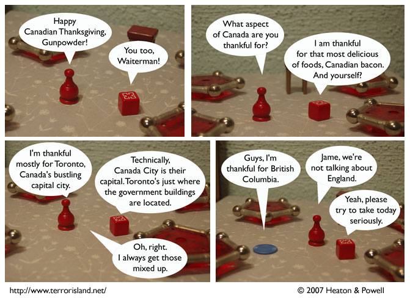

Strip #207
— Monday, October 8, 2007
British Columbia once saved Jame’s life.
Notes, Thoughts, &c.
Ben’s Notes
This Canadian Thanksgiving, I’m thankful for Dave Foley, the talented actor-comedian from Kids in the Hall and NewsRadio. He was born in Etobicoke, Ontario, Canada.
Lewis’s Notes
I guess this Canadian Thanksgiving, I am thankful for the band Metric, who I saw perform on Friday night, and who had a kickin’ rad show. I think they are Canadian, but if not, I am still thankful.